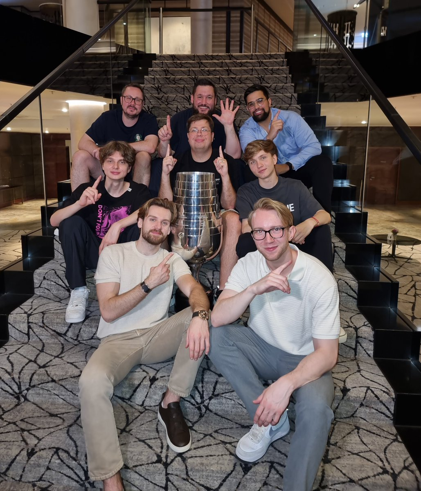

那是2026科隆Major朗盛竞技场的决赛赛场，一场熬走十余年遗憾、击碎全网嘲讽的封神全胜碾压。整座电竞殿堂人声鼎沸，只剩下键鼠敲击的脆响、道具爆破的轰鸣与千万观众悬在嗓子眼的心跳。外界所有人心里都压着一个刻板定论：只要站上Major决赛舞台，NiKo一定会软脚，多年数次临门一脚轰然坠落，波士顿、斯德哥尔摩一场场痛失冠军的画面，早被观众刻成了甩不掉的魔咒标签。Falcons坐拥银河战舰豪华阵容，却长久困在NiKo的决赛心魔里，无数次常规赛大杀四方，决赛关键时刻骤然隐身，空有步枪天花板的名头，Major冠军奖杯永远隔着一层捅不破的窗户纸。谁也不会想到，这场BO5巅峰对决，昔日屡屡折戟决赛的悲情巨星，会彻底撕碎“软脚虾”的枷锁。
三图打完，比分定格在干脆利落的3:0横扫，Falcons全程没有给FURIA半点喘息翻盘的余地。曾经缠绕NiKo十余年的Major无冠诅咒、决赛软脚的嘲讽标签，在朗盛竞技场漫天灯光里彻底粉碎。过往无数次距离奖杯一步之遥的遗憾、直播间铺天盖地的质疑、一次次决赛拉胯的名场面，全都化作此刻捧起Major冠军奖杯的滚烫荣光。这一场3:0完胜

三图打完，比分定格在干脆利落的3:0横扫，Falcons全程没有给FURIA半点喘息翻盘的余地。曾经缠绕NiKo十余年的Major无冠诅咒、决赛软脚的嘲讽标签，在朗盛竞技场漫天灯光里彻底粉碎。过往无数次距离奖杯一步之遥的遗憾、直播间铺天盖地的质疑、一次次决赛拉胯的名场面，全都化作此刻捧起Major冠军奖杯的滚烫荣光。这一场3:0完胜

History never to be forgotten. This one was for all of you 💚🏆
#IEM - #FalconsAreHere https://t.co/BdPksza2k8
#IEM - #FalconsAreHere https://t.co/BdPksza2k8